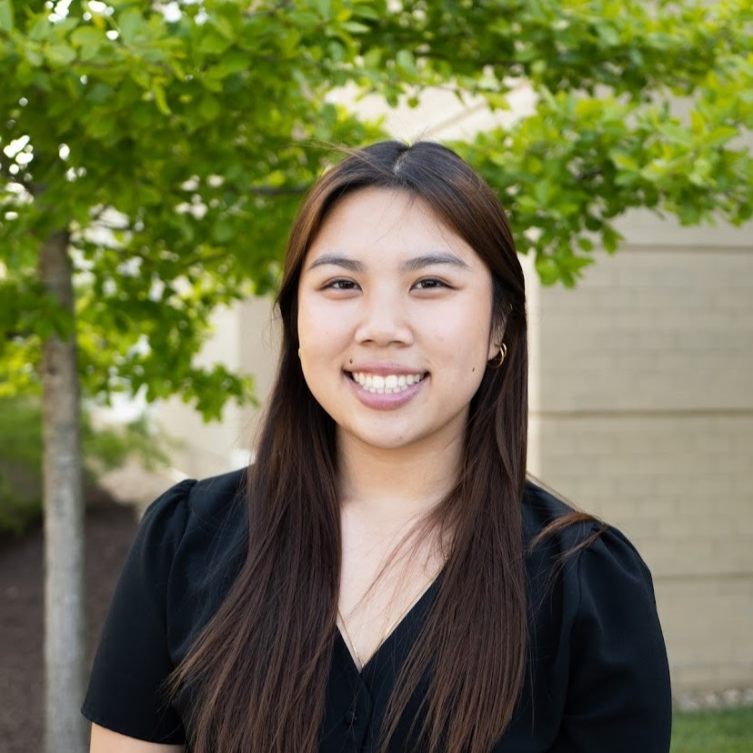

Contact
Chelsea Nguyen
myemail@dukes.jmu.edu
123-456-7890

Skills
Softwares & Languages
Adobe Photoshop, Adobe Illustrator, Adobe InDesign, Figma, HTML, CSS
Education
James Madison University
Bachelor of Arts
Major: Media Arts and Design | Minor: Art
GPA: 3.572 | Expected Graduation: May 2025
Westfield High School
June 2021 | GPA: 3.6
Experience
MITRE
June 2022-July 2022
- Cybersecurity and Information Security Intern
- Created the framework of a employee project database
- Designed prototypes using figma
Editor
August 2020-June 2021
- Yearbook and Literary Magazine Editor
- Managed a team and assigned work
- Lead interviews, created spreads, and took pictures
Swim Coach
January 2018-August 2021
- Year-round club swim coach and private coach
- Taught children ages 4-12 how to swim and how to improve stroke
- Organized community fundraisers and food donations for the team
- Designed coach apparel
Extra-curricular Activites
Vietnamese Student Association
August 2021-present
- President, April 2023-present
Delegated work to other executive board members. Lead weekly meetings to plan for events. Worked with other schools in the Mid-Atlantic region.
- Public Relations, April 2022-April 2023
Created instagram posts and flyers to promote the club.